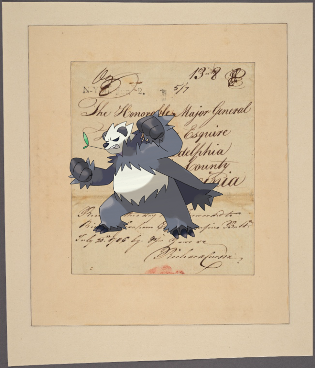

Pokémon in the NYPL archives
2018-10-29 02:10:04
Darkrai –
Le bastion 84.
!
2018-10-29 00:10:06
Aromatisse |
CHRISTMAS DINNER [held by] HOTEL REVELSTOKE [at] (HOTEL;)
!
2018-10-28 22:10:05
Sentret |
ANNUAL DINNER [held by] THIRD PANEL SHERIFF'S JURY [at] "DELMONICO'S, NEW YORK, NY" (HOTEL)
!
2018-10-28 20:10:05
Hypno ;
Hudson County, V. 8, Double Page Plate No. 31 [Map bounded by Browing Place, Summit Ave., Paterson Ave., Secaucus Rd., Railroad Ave.]
!
2018-10-28 18:10:04
Beartic, Latios +
Potosi.
.
2018-10-28 16:10:13

Pangoro on
Letter to Maj. Gen. Horatio Gates, Philadelphia or Berkley County, Va.
.
2018-10-28 14:10:05
Joltik @
Atlas of Long Island, New York. From recent and actual surveys and records.
!
64
|
63
|
62
|
61
|
60
|
59
|
58
|
57
|
56
|
55
|
54
|
53
|
52
|
51
|
50
|
49
|
48
|
47
|
46
|
45
|
44
|
43
|
42
|
41
|
40
|
39
|
38
|
37
|
36
|
35
|
34
|
33
|
32
|
31
|
30
|
29
|
28
|
27
|
26
|
25
|
24
|
23
|
22
|
21
|
20
|
19
|
18
|
17
|
16
|
15
|
14
|
13
|
12
|
11
|
10
|
9
|
8
|
7
|
6
|
5
|
4
|
3
|
2
|
1
|
0
![Aromatisse on CHRISTMAS DINNER [held by] HOTEL REVELSTOKE [at] (HOTEL;). http://digitalcollections.nypl.org/items/1e237810-c53a-012f-42e9-58d385a7bc34](media/finding-EHIOtrdt.png)
![Sentret @ ANNUAL DINNER [held by] THIRD PANEL SHERIFF'S JURY [at]](media/finding-pHKZVpHo.png)